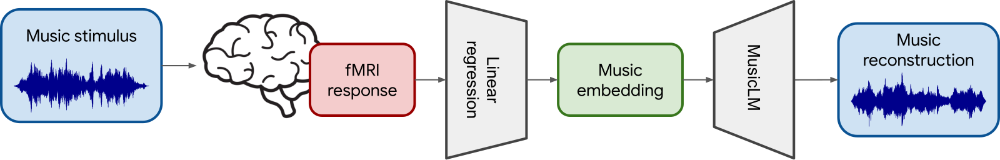
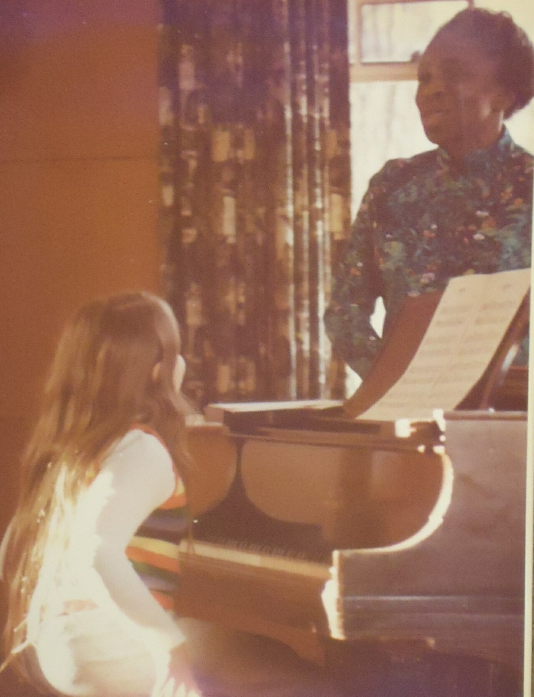
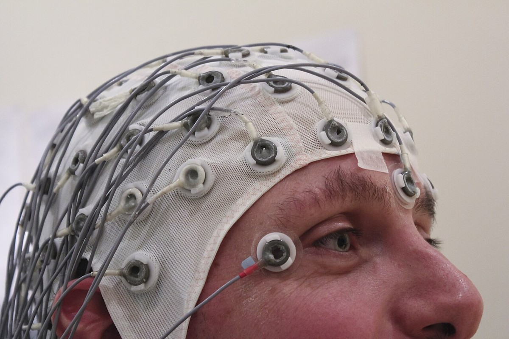
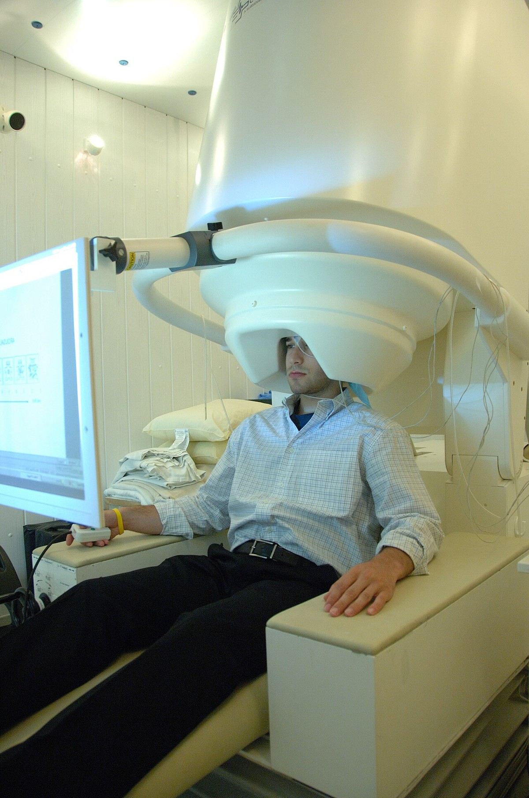
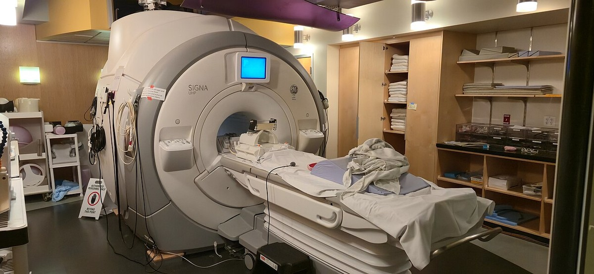
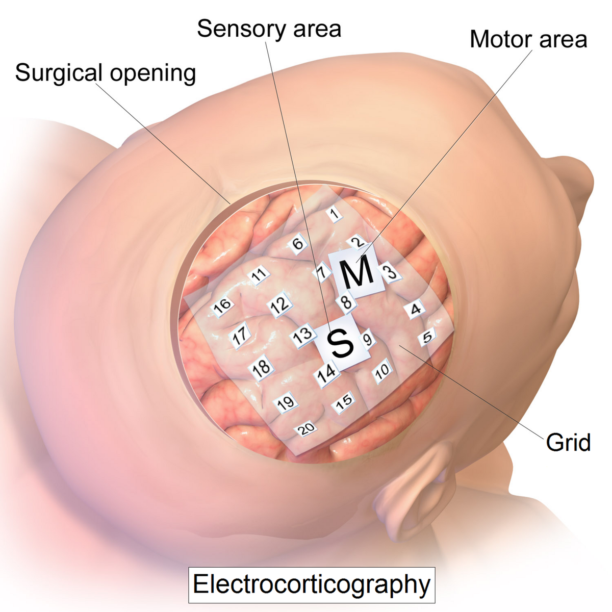

The Music That Plays the Brain
Zhiqian ChenDepartment of Computer Science, Rochester Institute of Technology
[minute 0.0 of 29] Title as sent to the organizers: The Music That Plays the Brain (no subtitle). The dots are the opening of Für Elise. Say nothing. Go straight to the sound.
Listen
Pink Floyd, played back from electrodes on the brains of 29 patients
Heard vs decoded
play heard
play decoded from the brain
Rhythm and melody contour survive. The decoder learned this one song.
[minute 0.3 of 29] Cold open. Press play before saying anything: first what the patients heard, then what a decoder recovered from their cortex. Then: this is 2023, 29 people, one song. By the end of the talk I want you to imagine the reverse: music written for one brain.
The question
Many people with advanced dementia can still sing the hymns of their youth
A choir of older adults sings at a Dutch care home
Music reaches a brain that has lost almost everything else.
What if we could choose the song for one of them, and watch her brain answer?
[minute 1.3 of 29] A pattern families and care staff describe, and the reason Jacobsen 2015 asked why musical memory survives. Tell it as what care staff see, not as one named patient. The photo is a care home choir, not the person in the story. Ask: what if we could choose the song on purpose, and watch the brain answer? The photo returns on the last slide. Backup has the anatomy: the regions that hold long known music show the least atrophy in Alzheimer's (Jacobsen 2015).
Your turn
Same notes, same sound. Which one is Beethoven?
play version A
play version B
Same notes. Only the rule that picks each next note differs
[minute 2.6 of 29] Play A then B, five seconds each. Ask the room which is Beethoven (B). A is a first order chain built from the same notes: each note depends only on the one before. The full knob comes in Act 5.
The claim
Soon we will compose music for one brain, and watch it answer .
Today: how close we are, the one thing missing, and what we can build together.
Vision
[minute 3.1 of 29] The bold claim of the talk, said slowly. To confirm with Zhiqian: the wording "soon" (no year on the slide). The missing thing is control of the stimulus, revealed in Act 4.
Three findings
Three steps to get there
We can already read music in the brain, and music AI predicts part of its response.
We cannot steer it yet, because natural music does not change on cue.
Generative models begin to turn music into a dial.
[minute 3.8 of 29] Read them slowly. Finding 3 is the thesis, stated fully only in Act 4. These three lines return as the contributions on the last slide.
The map
Four ways the field studies music and the brain, and a missing fifth
Music songs, scores, sound Brain EEG, MEG, fMRI, ECoG Models audio and music AI Patients therapy outcomes 1 Encode predict the brain from the music 2 Decode play the music back from the brain 3 Compare does a model resemble the brain? 4 Treat does music help patients? 5 Control set the music, one knob at a time [minute 4.6 of 29] Say in one line: EEG and MEG give the when, fMRI the where, intracranial both (backup slide). The map returns once more before the turn to the dial. Arrows 1 and 2 are Act 2. Arrow 3 is Act 3. Arrow 4 is Act 4. Arrow 5, dashed, is the gap and Act 5.
1 Why music
Music releases dopamine twice: while we wait for the peak, and when it lands
time in the piece
anticipation
caudate
peak pleasure
nucleus accumbens
Expectation is part of the reward. Whoever shapes expectation shapes the response.
Schematic of the paper's finding, not data
Robert ZatorreMcGill, senior author
The chills were confirmed with autonomic recordings, the signals a wearable picks up.
[minute 5.6 of 29] One line from the backup slide: music recruits motor, reward, memory and emotion systems at once (Koelsch 2014). PET gives the chemistry, fMRI the timing, same listeners, same music. Last line plants a seed: expectation is part of the reward, and a generator can shape expectation. Check against the paper before saying it: chills were confirmed with psychophysiological recordings (heart rate, respiration, skin conductance), a hook for the ECG and wearables people in the room.
1 Why music
Your auditory cortex has a population that cares about song, and little else
speech instrumental music music with singing other sounds speech selective music selective song selective schematic of the component responses, 165 natural sounds
Sam Norman-HaignereU Rochester
[minute 6.4 of 29] Room question first: which of these sounds drives the purple bars, speech, instruments or singing? Schematic of Fig 2A in Norman-Haignere 2022: bar lengths show which sound categories drive each component, not measured values. Rows are the 165 sounds, red means strong response. C1 and C15 prefer speech, C10 music, C11 song. Seen with ECoG, confirmed with fMRI, not explained by acoustic features. Norman-Haignere is at the University of Rochester, a neighbor of RIT.
1 Why music
A steady beat can make a person with Parkinson's walk better
Patients fall into step with the beat
Patients step to the pulse: rhythmic auditory stimulation.
[minute 7.2 of 29] Say: remember this one, it comes back in the clinic. Beat and meter show up in EEG as peaks at the beat frequency, even when the meter is only imagined (Nozaradan 2011, in Act 2). Plant for Act 4: the best understood music therapy is the one where the stimulus has a knob, the tempo.
2 What we can see · Running example
Your brain predicts every next note, and EEG can see the surprise
E5 D♯5 E5 D♯5 E5 B4 D5 C5 A4 C4 E4 A4 B4 E4 G♯4 B4 C5 E4 surprise of each note given the one before (bits) Di Liberto 2020: in 20 listeners, adding surprise raises EEG prediction from 0.073 to 0.078.
[minute 7.8 of 29] Audience moment: play the first eight notes in your head or hum them, ask the room which note surprised them. Then reveal the bars. Our running example. Top: the first 18 notes, height is pitch. Fragment: surprise of each note given the previous one, counted on this excerpt. The E, D sharp trill is predictable. The turn to G sharp and the leaps are surprising, only the most surprising note in orange. Question for the room: does the brain track this curve?
2 What we can see · Encode
Try it: imagine a march. Your cortex now shows a peak the beat does not have
beat only 2.4 Hz imagine a march 2.4 Hz 1.2 Hz imagine a waltz 2.4 Hz 0.8 Hz 1.6 Hz EEG frequency, schematic of the paper's finding
Sylvie NozaradanUCLouvain
[minute 8.8 of 29] Audience moment. Ask the room to imagine a steady beat as a march: one two, one two. Then reveal: in EEG, listeners who imagine a march show a peak at half the beat frequency, a waltz at a third. The meter exists only in the brain. Nozaradan 2011, J Neurosci.
2 What we can see · Decode
From brain scans, an AI composer makes music that matches what people heard in genre and mood
play what they heard
play made from their brain scan
the authors' best example, 5 people scanned
85%
of clips picked out against another clip, chance 50%. 66% in a low level sound space.
Genre, instruments and mood carry over. Timing and tempo often do not.

[minute 9.8 of 29] Audio: one of the authors' highlight pairs from the Brain2Music project page, picked as the best of 10. Play 5 s of each. Five people scanned, 540 clips. fMRI is mapped to a 128 number music embedding (MuLan), MusicLM turns it into sound. The 85 percent: is the generated clip closer to the true clip than to another clip, judged in MuLan, the space the decoder aims at, chance 50. In a low level audio space it is about 66 percent against a ceiling of about 79 (backup has the bars).
2 What we can see
A music AI's layers line up with the auditory cortex's hierarchy
0 0.5 1 0 4 8 12 model layer far sites early sites redrawn, approximate fit, normalized
Early layers fit primary auditory cortex. Late layers fit sites farther out
Nima MesgaraniColumbia
[minute 10.8 of 29] Three electrode clusters: blue prefers early layers and sits in primary auditory cortex, yellow peaks in middle to late layers, magenta prefers late layers and sits farthest out. classical piano pieces, 20 EEG listeners and 6 intracranial patients (the curves are from the intracranial data). Expertise changes how strongly context is encoded. Curves redrawn approximately from Fig 3a: teal is the early layer cluster (blue in the brain image) near primary auditory cortex, purple the late layer cluster farthest out. A third, middle cluster (yellow in the paper) peaks in middle to late layers.
2 What we can see · My own data
Averaged over hundreds of notes, the notes MusicGen calls surprising get a bigger brain response In progress
0 0.2 0.4 0.6 seconds after the note starts note cluster, p = 0.0028 surprising notes expected notes 0 EEG (SD)
0.16 s after the note, over the top of the head
29 listeners. Note by note: r = 0.083, an untrained model 0.155, both chance level. The untrained model is not yet tested on the average.
[minute 11.7 of 29] Orange: notes one SD more surprising, gray: one SD less. 29 listeners in all, 14 to 21 per song. Clear when averaged over hundreds of notes. Not yet run: the group level control with an untrained model, and confirming which nuisance regressors are in the regression. Surprise for every note from MusicGen-large, EEG from an open dataset of people hearing familiar songs. Live demo: aquastar.github.io/music-to-brain/eeg-demo. Not yet tested against the untrained model at group level. Regression over all songs and all 29 listeners, separating overlapping note responses. Cluster permutation p = 0.0028, 11 frontocentral channels, 0.09 to 0.34 s, peak 0.16 s, a P2 like window. Scalp maps: extra response per one SD more surprise. If time allows, switch to the demo for 20 seconds: step to the next surprising note at quarter speed. Fallback is a screen recording. To confirm with Zhiqian: which nuisance regressors (envelope, onsets) the group regression includes. Scalp maps use teal for negative and purple for positive. Cluster permutation p = 0.0028 over 11 frontocentral channels, 0.09 to 0.34 s.
2 What we can see · Interactive demo
Try it: step to the next surprising note and watch the EEG of the 19 listeners who heard this song
[minute 12.8 of 29] Say before stepping: averaged over hundreds of notes the effect is clear, a single note is too noisy to read. The surprising notes shown are picked by the model, not by me. Live demo, 60 to 90 s. Pick Home on the Range, quarter speed, press next surprising note. Point at the score, the model curve and the EEG bump in the shaded window. Fallback: the 20 s screen recording. Public dataset OpenNeuro ds005876. Fallback if the browser fails: shared/eeg_demo_fallback.webm (20 s screen recording, three surprising notes at quarter speed). Open on the panel for all notes and all listeners. Then say plainly: note by note neither MusicGen nor an untrained model beats chance. The claim is the average on the last slide, and its control is pending.
3 Seeing is not understanding
Arrow 3: does a model of music resemble the brain?
We can read music from the brain. Do models explain it? Music songs, scores, sound Brain EEG, MEG, fMRI, ECoG Models audio and music AI Patients therapy outcomes 1 Encode predict the brain from the music 2 Decode play the music back from the brain 3 Compare does a model resemble the brain? 4 Treat does music help patients? 5 Control set the music, one knob at a time [minute 14.7 of 29] Alignment studies. Same encoding machinery, but the features now come from inside an AI model.
3 Seeing is not understanding
Past about eight notes, a better music model fits the brain worse
fit to the brain MEG, gain from surprise peak at 8 notes model at music next note accuracy 1 5 10 25 100 400 notes of context the model may use [minute 14.9 of 29] Guess moment first: ask the room whether a model that predicts music better should fit the brain better. Then show the curve. Values read approximately from Fig 3C. Top: how much the Music Transformer's surprise adds to MEG prediction, 35 listeners. Bottom: how well the same model predicts the next note. The model keeps improving with context, the fit to the brain peaks near eight notes and falls. A fit is a filter, not a mechanism.
3 Seeing is not understanding
The catch: in every study of real music, the music was fixed
One song
the decoder never heard another
540 clips
picked from fixed recordings, nobody changed their tempo or tune
Fixed songs
my surprise curve rode along with everything else in them
We can see the musical brain. With recorded music, nobody can change one property and hold the rest.
[minute 16.2 of 29] One honest slide. Bellier: one song. Brain2Music: 5 people. My per note check: MusicGen r = 0.083, untrained model 0.155, both inside 2000 shuffles. Also Kern 2022 (backup): past about eight notes a better music model fits the brain worse. Say: a dial gives hundreds of notes at each chosen surprise level, fixed songs cannot.
4 The clinic
In dementia, music lifts mood slightly, and the effect is gone four weeks later
music worse music better certainty Depressive symptoms moderate Agitation, aggression moderate Cognition low to very low Filled: interval excludes zero (orange: moderate certainty). Four weeks after treatment, no clear effect. [minute 17.2 of 29] Music versus usual care at the end of treatment, standardized mean differences with 95 percent intervals. Depression SMD 0.23, moderate certainty. Behavior 0.31, low. Agitation 0.05, moderate certainty of no effect. Cognition 0.19, interval crosses zero, low to very low. This tempers Act 1: musical memory is preserved, but music therapy does not restore memory. Insomnia (Jespersen 2022): self rated sleep improves, objective sleep shows no clear gain.
4 The clinic
A beat you can set helps people walk, in Parkinson's and after stroke
+11.3 m per min
walking speed after stroke with rhythmic auditory stimulation, 9 trials, moderate certainty
In Parkinson's, 18 trials: stride length and walking speed improve.
The beat is a parameter that can be set and repeated.
play tap along: 72 bpm
Michael ThautU Toronto
[minute 18.0 of 29] Room moment: play the click and ask everyone to tap their foot. That is the dose a gait therapist sets. Magee 2017: gait velocity +11.34 m per min (9 trials, 268 people, moderate), cadence +10.77 steps per min (7 trials, low). Ye 2022: in Parkinson's, stride length, velocity and UPDRS III improve across 18 RCTs, cadence does not. Payoff of the Act 1 plant. Magee 2017: +10.77 steps per minute after stroke, 7 trials, 223 people, low quality. Ye 2022: in Parkinson's, stride length, velocity and UPDRS III improve across 18 RCTs, no significant effect on cadence. The mechanism is clearest where the stimulus is a parameter. Say: a gait therapist sets the beat near the patient's own cadence, 72 is only an example.
4 The clinic
The bottleneck is not the measurement.stimulus .
My view. Short artificial sequences already have knobs (Koelsch, Quiroga-Martinez). Generators begin to give whole pieces of real music the same knobs.
[minute 18.8 of 29] The turn of the talk. One breath: we cannot vary real music one factor at a time, so research stays correlational and therapy stays unreportable. Every crack from Acts 2 and 3 is this one. Finding 3 from the forecast. The metronome slide just showed it: the one therapy with a set stimulus is the best understood.
4 The clinic · After the turn
Change one chord, and the brain answers within 200 ms
play a regular cadence play the same with an odd last chord
ERAN regular chord odd chord 0 200 400 600 ms after the last chord, right frontal neg schematic, not data Your brain just did this
Where a stimulus has a knob, the brain moves with it. Generators bring the knob to whole pieces.
[minute 19.3 of 29] Cadences synthesized for the talk in the style of Koelsch 2000 (odd final chord: a Neapolitan). Play both: everyone hears the odd one, and EEG shows it within 200 ms. Di Liberto and Kern turned the model, not the stimulus, so they are not rows here. Payoff of the Di Liberto setup: memory length was a property of the listener model, here the music itself moves. Koelsch 2000: ERAN to irregular chords. Mismatch negativity to deviant notes is reduced in uncertain melodies (Quiroga-Martinez 2019, Cortex). Those designs use short artificial sequences. The new thing is naturalistic, parametric control at scale. Controlled stimuli complement natural listening. The ERAN drawing is a schematic of the paper's finding, not data. Memory length in Di Liberto 2020 was a setting of the listener model, the generator makes it a setting of the music. Other knobs: melody uncertainty shrinks the mismatch response (Quiroga-Martinez 2019), a tempo knob speeds walking after stroke.
The map
Arrow 5: set the music, one knob at a time
Now the stimulus becomes the variable. Music songs, scores, sound Brain EEG, MEG, fMRI, ECoG Models audio and music AI Patients therapy outcomes 1 Encode predict the brain from the music 2 Decode play the music back from the brain 3 Compare does a model resemble the brain? 4 Treat does music help patients? 5 Control set the music, one knob at a time [minute 20.7 of 29] The dashed arrow becomes solid. Models were used in arrows 2 and 3 to explain the brain. Here they are used to make the stimulus. Say: oddballs and odd chords already turned one knob on short sequences (Koelsch 2000, backup). A generator turns the whole piece.
5 Music you can experiment on · Running example
Turn one dial: the same notes go from shuffled to almost a tune. Then hear Beethoven In progress
play order 0, shuffled
play order 1, walk the graph
play Beethoven
Same notes and rhythm. Surprise is computed for each stimulus.
Chen et al., Markov graph analysis, in preparation
[minute 21.1 of 29] The graph is Für Elise: each note points to the notes that follow it. Order 0 shuffles, order 1 walks this graph, higher orders approach the piece. The order 1 sample was made with seed 29 by src/fur_elise.py. A controlling three steps: report the generator settings, compute surprise per stimulus with a listener model, include onsets, envelope and interval size as nuisance regressors. Backup: six traditions from one transition table. Intervals and contour change with order too, so surprise is computed per stimulus and onsets, envelope and interval size go in as nuisance regressors. Backup has the style vs copying result: higher orders copy longer spans from training, so stay at low order for new stimuli.
5 Music you can experiment on · A neural generator
Turn one dial inside a neural music generator: same seed, only the tempo words change
play slow play medium play fast
60 bpm asked measured 59 bpm 100 bpm asked measured 100 bpm 160 bpm asked measured 158 bpm loudness over 8 seconds [minute 22.3 of 29] Tempo is the dial a metronome already has. The next slide is one only a generator can turn. MusicGen small, one seed, generated for this talk, measured 59, 100 and 158 bpm.
5 Music you can experiment on · A neural generator
A neural generator plays the same three melodies as real music: shuffled, chained, Beethoven
play order 0 play order 1 play Beethoven
One seed, generated for this talk. Same prompt, only the melody we feed in changes.
Predictability can be fed in
[minute 23.0 of 29] Generated for this talk with MusicGen melody on a laptop CPU: prompt "gentle solo piano, classical, warm room", seed 11, conditioned on the three Für Elise versions from the dial slide. Scripts: src/melody.py and src/gen.py, numbers from src/melody_check.py (melody_check.json). Play four seconds of each. This is the dial only a generator can turn: the predictability of the notes is set by the order, the generator makes it sound like music. Chroma correlation of each clip with its own melody 0.54 to 0.60, with the other two 0.14 to 0.22 (melody_check.json).
5 Music you can experiment on · Running example
Prediction: the more natural the order, the more closely EEG should track each note's surprise
More structure, sharper expectations, so a broken one costs more.
how strongly EEG tracks surprise PREDICTION, NO DATA YET order 0 order 1 order 4 the real piece First test: four settings, 24 young and 24 older listeners, decision rule set before recording. Planned
[minute 24.5 of 29] Surprise here comes from a listener model (as in Kern) computed on each stimulus, not from the generator. If the curve is flat after controlling intervals and onsets, surprise was a proxy for something else. Either outcome is informative.
5 What becomes possible
Close the loop: the brain's response chooses the next phrase of music Vision
play the same piece moving through three settings
order 0 order 1 Beethoven staged mock up: the dial follows a script, not EEG Generator, listener, EEG, model of the brain: the loop that picks the next phrase. Over whole phrases or sessions, not single notes.
[minute 25.2 of 29] The future picture. Each piece of the loop exists today: generators with settable properties, EEG surprise responses, models of the brain. What is missing is putting them in one loop, with the settings logged as the dose. Vision, not a result. Say: the hard part is reading the brain fast enough, single trials are noisy, so the loop will first work over whole phrases or sessions.
5 What becomes possible
One day a music therapy could read like a prescription Vision
Rx Music dose, week 3 example: a listener, 81, moderate dementia length 20 min, after lunch predictability order 2, familiar contour tempo 72 bpm, steady beat timbre piano and voice adjust by her response, weekly
Every line is a setting a generator could hold
Today a trial reports a playlist. A dial lets it report a dose.
The same dial could be read out with EEG, heart rate, skin conductance or sleep.
fictional example
[minute 26.4 of 29] Fictional example patient, a vision of reporting, not a treatment claim. The point: each line is a parameter we can set, log and repeat.
5 What becomes possible · Next month
Three experiments you could run next month with these stimuli
EEG lab
three orders of the same notes, your own TRF
play play play
ECG or wearables lab
three tempi, heart rate and skin conductance, longer versions on request
play play play
Clinical team
log the settings of whatever music you already play
[minute 27.2 of 29] Each is open, no result claimed. The QR on the last slide points to the same page.
Close
Next time she sings, we choose the song, and her brain shows us what she responds to Vision
We can read it. We cannot steer it yet. Generators begin to give us the dial.
We need an EEG or physiology lab with older or hearing impaired listeners
play once more, the song as the brain played it
the stimuli, their settings and the demo
[minute 28.3 of 29] Say the three findings aloud: music can be read from the brain and models predict it, it is still correlation and clinical certainty is low, generative models make the stimulus a variable. To confirm with Zhiqian: the partner request and the physiology option. Say the first step and what we bring: stimuli with logged settings, analysis code, the pilot window.
5 What becomes possible · First step
First step: one EEG study, four dial settings, 48 listeners Planned
Stimuli: chains trained on a melody corpus, 20 s each, same timbre, settings logged order 0 order 1 order 4 real, unfamiliar held out melodies, familiarity rated 24 young, 24 older hearing screened 64 channel EEG, 40 min Outcome surprise gain in a TRF over envelope, onsets and interval size Test and decision rule, set before recording a linear trend across order 0, 1, 4 in both groups Planned design, group size to be fixed from the pilot
Concrete enough for an EEG lab to say yes. The pilot (ds005876, 29 listeners) gives the effect window and size. Group size about 24 per group will be fixed from that pilot, not presented as a power result. Older adults first, because clinical evidence is weakest there, and hearing aid users later because compression changes the acoustic baseline. Group size about 24 per group, fixed from the pilot (my ds005876 analysis), not a power result. Year 2: the same protocol in a hearing loss or dementia cohort. One line from backup: what to measure is alignment that survives an acoustic baseline. To confirm with Zhiqian (options, not on the slide): hearing screening, a linear trend test across orders, z scoring surprise within condition, an attention probe, stimulus counts, the clinical population and outcome. To confirm with Zhiqian (all on the slide under Planned): corpus trained chains instead of Für Elise, unfamiliar held out real melodies with a familiarity rating, hearing screening, the linear trend test and decision rule. Option: also record heart rate and skin conductance for the ECG and wearables part of the room.
5 What becomes possible
Three things a music dial makes possible Vision
A music dose for rehabilitation and dementiasettings written down, adapted to the person A standard music probe for EEGlike gratings in vision research 
Music tuned to a listenerhearing, age, taste
The same dial could be tested with heart rate, skin conductance and sleep EEG.
Three pictures to take home. Keep each to one sentence. All three are visions, the protocol on the next slide is the first step.
2 What we can see · Encode
EEG tracks how surprised you are, note by note
EEG prediction correlation, mean of 20 listeners sound only 0.073 sound plus surprise 0.078
Small but reliable
Seen in most of the 20 listeners Stronger in musicians
Means read approximately from Fig 2A. The effect sits over central channels about 200 ms after each note and was confirmed with ECoG. Prediction correlations are small in absolute terms, this is normal for continuous EEG. The point is the reliable difference.
3 The catch
In a reconstruction, the brain supplies 128 numbers. The generator supplies the rest
fMRI
128
numbers
music generator
trained on hundreds of thousands of hours
audio
The brain picks a direction. The prior fills in the music. MusicLM was trained on about 280 thousand hours of music. The brain supplies 128 numbers. Not a criticism of the paper, which says this itself. It is a criticism of reading reconstruction as understanding.
Backup · Questions
Likely questions and where the answer is
Has knob control of music been done before? ERAN and MMN studies, knob table
Does MusicGen beat an untrained model? Per note check, shuffle plot
Is the reconstruction just the generator? The 128 numbers slide, Denk bars
Can a generator change style, not only tempo? Steering slide (under review)
Why is the stimulus the bottleneck, not bias or sample size? Cochrane reasons slide
Does music therapy work at all? Five reviews and the dementia forest plot
Index for Q and A. Jump with the slide overview (press O).
2 What we can see · Decode
Twenty nine epilepsy patients listened to a Pink Floyd song with electrodes on the cortex
A rare window: ECoG during surgery planning
347 of 2,668 electrodes tracked the song One song, three minutes play a simpler decoder
Robert KnightUC Berkeley, senior author
The grids were there for clinical reasons, listening was the experiment. Most tracking electrodes sit over the superior temporal gyrus, the right side mattered most. Another Brick in the Wall, Part 1.
5 Music you can experiment on · Own work
Remembering a single note already tells six traditions apart In progress
majority class 21% 20% 50% 80% 70.2% 0 1 2 3 variable Markov order (notes remembered) likelihood
style identified from a 12 by 12 transition table, majority class 21%
Order 0 knows only which notes occur. Order 1 knows which note follows which. That one step is the big jump.
Chen et al., in preparation
992 pieces, six styles, five fold cross validation. Blue: likelihood classifier. Orange: table features with logistic regression. Check 70.2 against the latest run before the talk (an older note said 70.9). Redrawn from his accuracy_by_order figure (pitch class panel), values approximate. 70.2 still to confirm against the latest run.
5 Music you can experiment on
Inside a large music generator, a style can be removed cleanly. Adding one does not work yet Under review
remove a style add a style
leaves easily, still music the push misses the thin set Knobs exist, but they are not symmetric. We must know which ones are real. Schematic, not data
A style is a thin set of trajectories, not a direction. For brain experiments: removal gives a clean control condition, addition does not yet. To confirm with Zhiqian: the two plain sentences in the headline against the under review paper. For brain studies, removal gives a clean control condition.
1 Why music
The brain regions that hold long known music show the least damage in Alzheimer's
Young adults, 7T fMRI
long known songs activate caudal anterior
cingulate and ventral pre SMA
Alzheimer's patients
the same regions show the least atrophy
and least metabolic loss
The music memory network is reached late, so the hymn survives.
32 young adults, 20 patients. Amyloid in these regions is not lower.
This is the anatomy behind the hymn. Caveat for Q and A: amyloid in these regions is not lower, the regions are reached late, not spared forever.
The map
Arrow 1: predict the brain from the music
We can predict the brain from music. The stimulus was a fixed recording. Music songs, scores, sound Brain EEG, MEG, fMRI, ECoG Models audio and music AI Patients therapy outcomes 1 Encode predict the brain from the music 2 Decode play the music back from the brain 3 Compare does a model resemble the brain? 4 Treat does music help patients? 5 Control set the music, one knob at a time Encoding models. Feed features of the music in, predict EEG out. The test is always the gain over an acoustic baseline.
2 What we can see · Encode
Di Liberto's test: does EEG need surprise, beyond the sound itself?
Two models, one difference
Predict EEG from acoustics (A), then from acoustics plus surprise (AM). The gap is the brain's share of expectation.
Giovanni Di LibertoTrinity College Dublin
TRF: a linear filter from stimulus features to each EEG channel over time lags. Surprise came from IDyOM, a variable order Markov model of melody. 20 participants, EEG, plus ECoG patients.
The map
Arrow 2: play the music back from the brain
We can play music back from the brain. The stimulus was one fixed song. Music songs, scores, sound Brain EEG, MEG, fMRI, ECoG Models audio and music AI Patients therapy outcomes 1 Encode predict the brain from the music 2 Decode play the music back from the brain 3 Compare does a model resemble the brain? 4 Treat does music help patients? 5 Control set the music, one knob at a time Decoding. Two studies, one invasive, one not.
3 The catch · My own data
My own data shows the limit: note by note, MusicGen does no better than an untrained model
-0.3 0 0.3 r when surprise and response are shuffled, 2000 times untrained model 0.155 MusicGen 0.083 Both sit inside the shuffles: MusicGen 786 of 2000, untrained 215 of 2000. 105 notes, 3 fixed songs.
Numbers come from src/eeg_pernote.py, the same rule as the demo scatter. Neither r is outside the shuffle distribution. Single note responses are noisy: a new note every 0.2 to 0.4 s. Decoding as a whole rests on few listeners and few songs: 5 for the fMRI reconstructions, one song for Bellier, 10 to 20 in public music EEG sets. Last crack before the clinic.
3 The catch
Everything so far is a correlation.To test a cause, something has to be changed.
Third crack. Then turn to the clinic, where people do change things.
The map
Arrow 4: does music help patients?
We can see the musical brain. The stimulus is still fixed. Music songs, scores, sound Brain EEG, MEG, fMRI, ECoG Models audio and music AI Patients therapy outcomes 1 Encode predict the brain from the music 2 Decode play the music back from the brain 3 Compare does a model resemble the brain? 4 Treat does music help patients? 5 Control set the music, one knob at a time Say: across five Cochrane reviews (backup slide), no outcome reaches high certainty, and follow up is short. The clinic is where music is actually changed and given to people. What does the evidence say?
4 The clinic
Reviews lower certainty for three reasons, and trials rarely say which music was played
GRADE reasons for lower certainty (rows 1 to 3) and a reporting gap reviews name (row 4) risk of bias no blinding, open allocation imprecision small samples inconsistency different controls and outcomes and the music is rarely described which piece, how loud, how long the one a lab can fix Backup has the music lessons meta analysis (Sala and Gobet 2020) if asked about transfer. Real recorded music confounds everything at once: tempo, timbre, familiarity, lyrics, emotion. You cannot vary one and hold the others. The order follows how often the reviews name each reason (risk of bias and imprecision most). The therapist and the group matter too, the music is the part we could specify, and rarely do.
Preview 2 of 4 · Seeing is not understanding
The best music model looks hundreds of notes back. The brain fits best at about eight
fit to the brain MEG, gain from surprise peak at 8 notes 1 5 10 25 100 400 notes of context the model may use Horizontal axis: how many previous notes the Music Transformer may use. The model keeps getting better at music up to 400 notes. Its fit to the brain peaks around 8 and falls. A better model is not automatically a more brain like model. Redrawn approximately from Kern 2022 Fig 3C. The body slide after Pepino shows the model curve too.
Preview 3 of 4 · The clinic
In dementia, music lifts mood a little. Cognition shows no clear gain
music worse music better outcome Depressive symptoms probably improves slightly Cognition unclear Standardized mean differences, music versus usual care at the end of treatment. 30 trials, 1,720 people. The full picture comes in Act 4.
1 Why music
We know music reaches deep into the brain.Do we know why?
Pause. Do not answer. Then show the map.
2 What we can see · Running example
Listening is prediction: each note of Für Elise confirms or breaks an expectation
E5 D♯5 E5 D♯5 E5 B4 D5 C5 A4 C4 E4 A4 B4 E4 G♯4 B4 C5 E4 surprise of each note given the one before (bits) Di Liberto 2020 showed EEG tracks this surprise beyond the sound itself, a small but reliable gain in 20 listeners (backup slide). Our running example. Top: the first 18 notes, height is pitch. Fragment: surprise of each note given the previous one, counted on this excerpt. The E, D sharp trill is predictable. The turn to G sharp and the leaps are surprising, only the most surprising note in orange. Question for the room: does the brain track this curve?
2 What we can see · Encode
The gain grows when the listener model remembers more of the past
1 2 4 8 16 32 all bars of the piece the listener model may remember 0 0.005 EEG gain from surprise (median)
Memory length matters
The music stayed the same. Only the model of the listener changed.
Medians read approximately from Fig 2C. Memory here is how many bars of the current piece IDyOM may learn from. This returns in Act 5 as one row of what has been turned so far. Memory here is how many bars of the current piece the IDyOM short term model may learn from. Keep it as a control result, not as Markov order.
2 What we can see · Encode
The limit: in natural music, surprise can be measured but not set
The melodies were fixed Bach pieces. Surprise rose and fell with the notes the composer wrote, not with anything the experimenter set.
First small crack. Say it lightly and move on.
2 What we can see · Decode
About 40 electrodes give 80 percent of the best result, about a minute of data gives 90
Small data, steep curves
Left: electrodes. Right: seconds of data.
The limit: one song, electrodes inside the skull.
play linear decoder
43 electrodes give 80 percent of the best accuracy. 37 seconds of data give 80 percent, 69 seconds give 90 percent (the red mark). For this audience: coverage matters more than recording length. Then the limit: every patient heard the same song, so this decoder cannot tell us what it would do with another. Transition: can a non invasive scan do it across many songs?
3 Seeing is not understanding · Compare
Audio models that do better on tasks also fit auditory cortex better
DCASE2020 DeepSpeech VGGish best models better at audio tasks fit to auditory cortex
r = 0.90
task skill vs fit to auditory cortex, 36 models
0.71 without the four weakest models
Yet a fit is not a mechanism.
Say: and from the preview, past about eight notes a better music model fits the brain worse (Kern 2022).
2 What we can see
Every recording method trades time against space

EEGmilliseconds, centimeters 
MEGmilliseconds, better localization 
fMRIseconds, millimeters 
Intracranialboth, only in surgery patients
Music changes in milliseconds. Ask where with fMRI, when with EEG.
The audience knows these tools. The point is only that music forces the choice. Intracranial recordings give both, rarely.
4 The clinic
Across five reviews, no music therapy outcome reaches high certainty
very low low moderate high
Depression, clinician rated Autism, global improvement Insomnia, subjective sleep Stroke, gait velocity Dementia, cognition
Effect sizes vary: large in depression (Aalbers 2017) and autism (Geretsegger 2022), about one SD in self rated sleep (Jespersen 2022), small in dementia. What holds across reviews: no outcome reaches high certainty, and effects are short term. Stroke: gait velocity +11.3 m per min, 9 trials, moderate (cadence is low certainty). GRADE certainty from Cochrane reviews. No outcome reaches high certainty.
2 What we can see · Running example
A tiny graph of note transitions already captures a musical tradition In progress
Für Elise as a graph: each note points to the notes that follow it.
This is the same object the surprise curve was computed from.
Chen et al., Markov graph analysis of six corpora, in preparation
Watch the ball walk the chain while the melody plays. A listener's expectation is built on graphs like this one, learned over a lifetime.
2 What we can see · Decode
Learn a map from electrode activity to the song's spectrogram, then turn it into sound
electrodes high gamma, 70 to 150 Hz
decoder linear, or a small network
spectrogram 128 frequency bins
audio
Every step is learned from this patient group and this one song.
The spectrogram to audio step uses phase estimation. Nothing here is a generative prior, which matters for the comparison with the fMRI study next.
2 What we can see · Decode
347 electrodes carried the music, most over the superior temporal gyrus
Both hemispheres, right side matters most
Top: every electrode. Bottom: those that tracked the song, colored by region. Red is the superior temporal gyrus.
Removing right temporal electrodes hurt decoding the most. A subregion was tuned to rhythm.
Dot size is prediction accuracy. The rhythm subregion responded to the guitar's 16th notes.
2 What we can see · Decode
The limit: one song, and electrodes inside the skull
Every patient heard the same three minutes. A decoder that has only ever seen one song cannot tell us what it would do with another.
Can a non invasive scan do the same, across many songs?
Transition to Denk and Takagi.
4 The clinic
Feelings improve. Measured function often does not
Insomnia sleep quality, self rated objective sleep
Dementia depressive symptoms cognition, agitation
A brain signal is exactly what could tell these two apart. Insomnia: three trials with objective measures showed no clear gain. Dementia: moderate certainty of no effect on agitation.
4 The clinic
Music lessons do not make children smarter, once the controls are fair
no effect
all studies small
randomized, active control about zero
The better the design, the smaller the effect. A warning for every claim in this field.
54 studies. Near transfer to musical skill is real, far transfer to IQ or school grades is not supported. A reanalysis disputes the exclusion choices and finds a small positive effect. A methods lesson, not an attack on music education.
5 Music you can experiment on
A controllable stimulus buys three things that recorded music cannot
causality
change one property, hold the rest, compare
personalization
tune to one listener's hearing, memory, taste
a dose
parameters that can be written down and repeated
Answers Acts 3 and 4: correlation, one size fits all, the missing dose
Map each box to a crack from earlier. Then show that the knobs exist, starting from the simplest one.
1 Why music
Listening to music recruits nearly every large system in the brain
auditory cortex
motor system basal ganglia, SMA: the beat
reward system striatum: pleasure, wanting
memory hippocampus, cingulate
emotion amygdala, insula
one stimulus, many readouts
Stefan KoelschUniversity of Bergen
One stimulus, many readouts: perception, movement, reward, memory, emotion. That is why music is a good probe. Sixty seconds.
5 Music you can experiment on
The catch: higher orders are classified as the style more often, but copy longer spans In progress
A knob has a range
Vertical: how often Markov judges classify a generated melody as its style. Horizontal: longest span copied from training.
The star, real held out melodies, scores lower than most generated ones, so these judges reward Markov likeness, not style. A listening test is next.
Chen et al., in preparation
48 note melodies, 600 per cell. Star: real held out excerpts. Familiarity is a confound in music studies, so copying matters.
5 Music you can experiment on
What to measure: alignment that survives an acoustic baseline Planned
acoustic features plus model layer plus steered layer
EEG variance explained (illustration, no data yet)
Only the gain beyond acoustics counts. Only a change after intervention is causal. The brain alignment scorer. Bars are illustrative. Replace with pilot numbers if any exist by December.